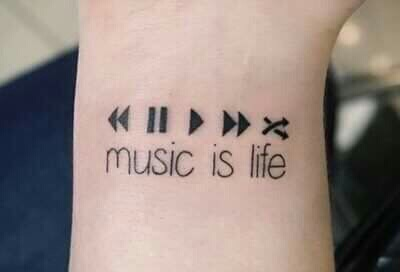

“Without music, life would be a mistake” ― Friedrich Nietzsche

"ARDUINO INSTRUMENT LINK #1: HIGHER PITCH"
"ARDUINO INSTRUMENT LINK #2: REGULAR PITCH"
"ARDUINO INSTRUMENT LINK #3: LOWER PITCH"
“The only truth is music.” ― Jack Kerouac
(daria n berna project yuh)